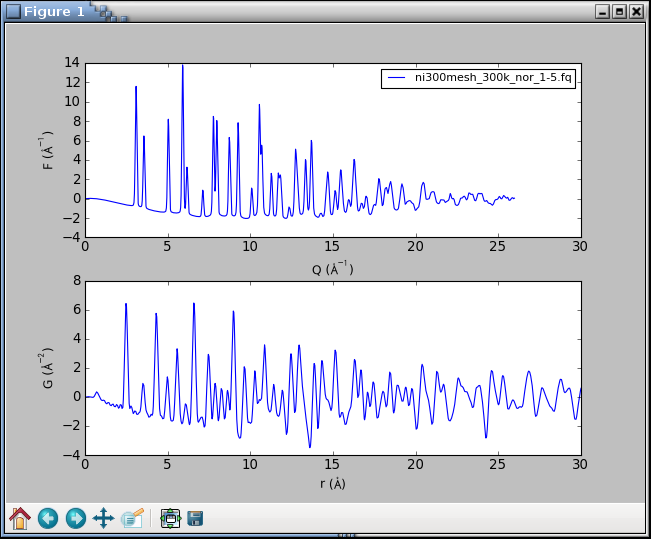
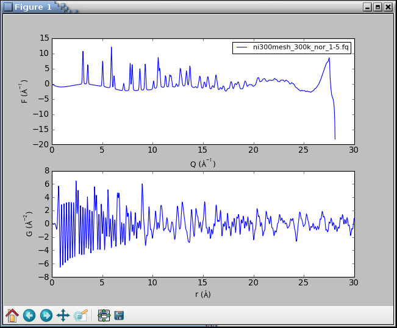

Tutorial¶
In this tutorial we will convert several X-ray powder diffraction
patterns to corresponding PDFs. Open a terminal on a Unix-based system
or a Command Prompt on Windows and navigate to the examples
folder included with the PDFgetX3 distribution. The examples
folder can be found in the parent “doc” directory relative to this
document or another option is to just search your file system for
one of the input files mentioned below.
The example files are also available at
https://www.diffpy.org/doc/pdfgetx/2.2.1/pdfgetxn3-examples.zip.
Nickel X-ray PDF¶
predefined configuration file¶
Change to the Ni directory. The file named
ni300mesh_300k_nor_1-5.chi contains powder X-ray data
measured from nickel at the Advanced Photon Source beamline
6ID-D. The file contains two columns for the 2Θ scattering
angles and X-ray intensities. The second file
kapton_bgrd_300k_nor_2-3.chi contains the background
measurement, i.e., the intensities from an empty capillary.
Finally, the pdfgetx3.cfg contains a complete configuration
parameters for converting the powder pattern to a PDF. Since all
processing parameters are already defined in the configuration file,
the first PDF calculation is very simple and involves running the
pdfgetx3 program
with the powder data file as an argument:
$ pdfgetx3 ni300mesh_300k_nor_1-5.chi
For the first run there should be no output on the screen,
however a new file, ni300mesh_300k_nor_1-5.gr should appear
in the work directory.
We can use the plotdata program,
included with this software, to plot the output data:
$ plotdata ni300mesh_300k_nor_1-5.gr
This will open a graph window and start an IPython interactive session.
To exit and close the figure, type exit() on the IPython prompt.
Let’s run the program again, but now with a
--verbose=info
option, to show more details about the program actions.
$ pdfgetx3 --verbose=info ni300mesh_300k_nor_1-5.chi
INFO:applying pdfgetx3 defaults
INFO:set config.mode = xray
INFO:searching for default config file /home/user/.pdfgetx3.cfg
INFO:searching for default config file .pdfgetx3.cfg
INFO:searching for default config file pdfgetx3.cfg
INFO:loaded default config file pdfgetx3.cfg
INFO:reset config.twothetazero = 0.0
INFO:parsing config file section [DEFAULT]
INFO:set config.dataformat = twotheta
INFO:set config.backgroundfile = kapton_bgrd_300k_nor_2-3.chi
INFO:set config.outputtypes = gr
INFO:set config.wavelength = 0.142774
INFO:set config.composition = Ni
INFO:set config.qmaxinst = 26.5
INFO:set config.qmax = 26.0
INFO:set config.rmin = 0.0
INFO:set config.rmax = 30.0
INFO:set config.rstep = 0.01
INFO:finished parsing config file
INFO:processing command line options
INFO:set config.verbose = info
INFO:finished with command line options
INFO:using 1 input files from the command line.
INFO:configuring PDFGetter mode 'xray'
INFO:calling config_xray
INFO:started PDF processing.
INFO:processing 'ni300mesh_300k_nor_1-5.chi'
INFO:resolved output file '' as 'ni300mesh_300k_nor_1-5.gr'
WARNING:ni300mesh_300k_nor_1-5.gr already exists.
WARNING:Use "--force=yes" or "--force=once" to overwrite.
INFO:elapsed time: 0.095
Here we can see what configuration files are searched, which of them
get loaded and what are the effective values of the processing
parameters. Unless the --verbose option is in effect, the
program will show only messages that have either WARNING or ERROR
importance. The warning line above indicates no output has been
written, because that file already exists. This safety check can be
overruled with the --force=yes option, upon
which pdfgetx3 would overwrite any existing files.
PDFgetX3 output files start with a header that lists all the processing
parameters and can be used as a valid configuration file with the
-c option. Another option, --plot=[iq,sq,fq,gr] turns on plotting of the final PDF or of some other result. A
side effect of the --plot option is that pdfgetx3 starts in
an interactive mode, so the user can manipulate or save the plots. To
put it all together, we are now going to redo the original PDF and plot
its reduced total scattering function F(Q) and the PDF curve G(r). This
time the chi file is not necessary, because the input file is already
listed in the gr file that is now used as a custom configuration:
$ pdfgetx3 -c ni300mesh_300k_nor_1-5.gr --plot=fq,gr
WARNING:ni300mesh_300k_nor_1-5.gr already exists.
WARNING:Use "--force=yes" or "--force=once" to overwrite.
Variables related to PDF processing:
pdfgetter -- PDFGetter used for calculation.
config -- configuration data used by PDFGetter.
See config.inputfiles for a list of inputs.
iraw -- matrix of input raw intensities with 2 rows per file.
iq sq fq gr -- intermediate results per each input file stored
as matrix rows.
Functions:
tuneconfig -- dynamically tune configuration variables.
processfiles -- process specified data files.
clearsession -- clear all elements from the inputfiles, iraw,
iq, sq, fq and gr variables.
plotdata -- plot all or selected columns from a text data file.
loaddata -- load all or selected columns from a text data file.
findfiles -- search for files matching the specified patterns.
Use "%pdfgetx3" for a fresh run without exiting IPython.
In [1]:
This will open a plot figure similar to
Because of the interactive mode implied by plotting,
the program enters an IPython session.
The IPython environment is preloaded with several extra functions
and variables related to the PDF processing. For example, the
config variable stores all the configuration parameters,
and its content can be displayed with the print()
function as
In [1]: print(config)
configfile = ni300mesh_300k_nor_1-5.gr
configsection = DEFAULT
dataformat = twotheta
...
qmax = 26.0
...
The processfiles() function allows to redo the
whole calculation and plotting process for additional input files or
for new parameter values. To plot the F(Q) and G(r)
curves calculated at Qmax = 22 Å-1, we can call
processfiles() and pass it a keyword argument for
the new qmax as follows:
In [2]: processfiles(qmax=22)
# the qmax parameter was updated to a new value, thus
In [3]: config.qmax
Out[3]: 22
There should be now two lines in each plot axis corresponding to
the results at Qmax equal 26 and 22 Å-1. To exit the program,
type exit().
processing from scratch¶
We have already encountered the command-line option -c
for specifying a custom configuration file. A special argument “NONE”,
will make pdfgetx3 ignore any configuration files and start up in a
default state. We can use this feature to process the nickel PDF as if
we did not have any configuration file:
$ pdfgetx3 -c NONE ni300mesh_300k_nor_1-5.chi
WARNING:Nothing to do, use "-t" or "--plot" options.
ERROR:Configuration error: wavelength not specified.
ERROR:See "--help" for more hints.
There is an error, for the wavelength is necessary to convert
the scattering angle 2Θ to momentum transfer Q. The
X-ray wavelength was 0.142774 Å, which can be passed with the
-w, --wavelength option:
$ pdfgetx3 -c NONE ni300mesh_300k_nor_1-5.chi -w 0.142774
...
ERROR:Configuration error: Chemical composition not known.
ERROR:See "--help" for more hints.
There is still an error. The PDF calculation needs an average
X-ray scattering factor of the material, which is obtained from
sample chemical composition. The composition can be specified
with the --composition option. The example
below uses a “\\” character to indicate the command continues
on the next line. Such syntax works in Unix terminals, but
on Windows the command has to be typed all on a single line:
$ pdfgetx3 -c NONE ni300mesh_300k_nor_1-5.chi -w 0.142774 \
--composition=Ni
WARNING:Nothing to do, use "-t" or "--plot" options.
...
There was no error message this time, but the program complains
about a lack of action. The pdfgetx3 program does not write any results
unless instructed by the -t, --outputtypes option.
The outputtypes option recognizes the following result types:
“iq”, “sq”, “fq”, “gr”. One or more of these type strings,
separated by a comma, can be included with the
-t option, which will produce the corresponding
output files. An empty string, such as -t "", or -t NONE
may be used to clear any outputtypes defined in the configuration file,
and avoid the unseemly file-exists warnings.
At this point, we will not write any output files, but will use the
--plot option to display the calculated curves. The
--plot accepts the same arguments as outputtypes, so to
display the F(Q) and G(r) curves we shall run
$ pdfgetx3 -c NONE ni300mesh_300k_nor_1-5.chi -w 0.142774 \
--composition=Ni --plot=fq,gr
WARNING:qmaxinst reset to last nonzero point qmaxinst=28.0865680161
WARNING:qmax reset to the data boundary qmaxinst=28.0865680161
which should open the following plot window:
The graphs look terrible. The PDF is very noisy and the F(Q) curve
shows a sudden break at about 27 Å-1. What happened? The powder
intensities are inaccurate at a very top of the detector angular range.
The interactive session is setup with
iraw, iq, sq,
fq, gr
variables for the original raw data and intermediate results. We
are going to plot the “iq” variable that has the input intensities
resampled on the Q grid. The matplotlib function
clf() clears the figure,
the iq variable is a two-row matrix with Q and I rows, and the
axis()
function lets us zoom to a given range:
In [1]: clf()
In [2]: plot(iq[0], iq[1])
Out[2]: [<matplotlib.lines.Line2D at 0x3e20f50>]
In [3]: axis([20, 29, 0, 3000])
Out[3]: [20, 29, 0, 3000]
The graph shows a sudden drop in the raw intensities at 27 Å-1.
The qmaxinst variable defines a Q cutoff for a meaningful
instrument intensities and, to be on a safe side, we are going to set
it to 26.5 Å-1
In [4]: processfiles(qmaxinst=26.5)
WARNING:qmax reset to the data boundary qmaxinst=26.5
The updated curves looks reasonable without any oscillations and
breakpoints. The tuneconfig() function provides a
GUI-driven way for visualizing the processing parameters and their
effect on the results. Type tuneconfig() to execute the function,
which should open a new window with several sliders. Try to move
different sliders and see how do the F(Q) and G(r) curves change.
The rpoly parameter controls the degree of data-correction
polynomial and is an approximate low-r bound of reliable G
values. Once the parameters are tuned, they may be set to
exact values. We will also turn on the writing of the G(r)
curve and save it to an output file nicmd.gr:
In [14]: config.qmax = 26
In [15]: config.outputtypes = 'gr'
In [16]: config.output = 'nicmd'
In [17]: processfiles()
Platinum X-ray series¶
PDFgetX3 has been designed to handle large series of data files. With the fast area-detectors it is easy to measure hundreds of X-ray patterns in a time or temperature series. Normally, these input files need to be entered as command line arguments to the pdfgetx3 program. This is usually no problem with Unix-like shells, which expand filename patterns to a list of matching files. However, such file generation is in general not available on Windows. The input file names tend to include scan numbers which are useful for selecting desired data, yet even with Unix shells it is difficult to match a range of scan numbers (z-shell being a notable exception).
matching input files¶
The pdfgetx3 program includes a built-in function for finding
a set of input files. The command line arguments are normally taken as
input file names. However, if the -f, --find option is
present, the arguments are understood as patterns and the program looks
for files that match ALL of them. Another option
-l, --list makes pdfgetx3 print out the matching files
without any other action, which can be used to verify if the patterns
match intended files.
We will try out this file search on platinum example files. Open a
terminal and navigate to the Pt directory. There should be a
series subdirectory with 6 chi files indexed from 903 to 908.
At first, let’s stay in the Pt directory and run the following
command
$ pdfgetx3 --list --find
Pt_bulk-00055-pdfgetx2.gr
Pt_bulk-00055-pdfgetx3.gr
Pt_bulk-00055.chi
empty_capillary-00032.chi
pdfgetx3.cfg
plotpdfcomparison.py
Without any patterns the file search matches all files in the current
directory. Now let’s try to add name patterns. There are few special
patterns, for example ^ matches at the beginning of the filename, $ at the end and <N-M> matches a range of integer values from
N to M. The patterns containing ^$<> need to be quoted as
these characters have special meaning in the shell. Here are some
examples how it works.
Filenames containing “y”:
$ pdfgetx3 --list --find y
empty_capillary-00032.chi
plotpdfcomparison.py
Filenames that containing both “y” and “chi”, here we use the
options --list and --find in an abbreviated
form -l and -f:
$ pdfgetx3 -lf y chi
empty_capillary-00032.chi
Filenames that start with “e”:
$ pdfgetx3 --list --find "^e"
empty_capillary-00032.chi
Filenames that contain character “2”:
$ pdfgetx3 --list --find 2
Pt_bulk-00055-pdfgetx2.gr
empty_capillary-00032.chi
Filenames that contain numeric value “2”:
$ pdfgetx3 -lf "<2>"
Pt_bulk-00055-pdfgetx2.gr
The special argument + starts a new group of patterns to
generate extra files when they cannot be all covered by
a single set of patterns. For example, to match files that
contain contain both “bulk” and “chi” substrings and then
also those that have “empty” and “chi” in their names, use:
$ pdfgetx3 -lf bulk chi + empty chi
Pt_bulk-00055.chi
empty_capillary-00032.chi
When pattern groups overlap the resulting matches are made unique and each file is listed only once
$ pdfgetx3 -lf bulk chi + chi
Pt_bulk-00055.chi
empty_capillary-00032.chi
data search path¶
Each group of PDFgetX3 patterns can have one entry containing
forward slash “/” to specify a non-current path that is searched
for input files. The path specification affects the current and
the following pattern groups unless they provide their own path.
The chi files numbered “903” to “905” and “908” from the
series subdirectory can be therefore matched using
$ pdfgetx3 -lf series/ "<903-905>" + 908
series/Pt_bulk_ramp03-00903.chi
series/Pt_bulk_ramp03-00904.chi
series/Pt_bulk_ramp03-00905.chi
series/Pt_bulk_ramp03-00908.chi
The current directory can be selected using ./
$ pdfgetx3 -lf series/ 903 + ./ bulk chi
series/Pt_bulk_ramp03-00903.chi
Pt_bulk-00055.chi
When additional pattern groups contain only the path
argument, they reuse the existing set of patterns. The
“.chi”-ending files in the current and series
directories can be thus found using
$ pdfgetx3 -lf ".chi$" + series/
Pt_bulk-00055.chi
empty_capillary-00032.chi
series/Pt_bulk_ramp03-00903.chi
series/Pt_bulk_ramp03-00904.chi
series/Pt_bulk_ramp03-00905.chi
series/Pt_bulk_ramp03-00906.chi
series/Pt_bulk_ramp03-00907.chi
series/Pt_bulk_ramp03-00908.chi
output file names¶
By default the output files are saved in the current directory. The
output path, can be changed with the -o, --output option.
The -o recognizes several tokens that are replaced with
parts of the input file name, for example, “@b” expands to an
extension-stripped base name. In similar faction, “@o” is replaced
with the output type extension. Thus to generate PDFs for all files
in the series directory and save them in the
series-gr subfolder do
$ pdfgetx3 --find series/ "<900-910>.chi" --output=series-gr/@b.@o
The extension “.@o” is automatic when not included anywhere in the output file name. Thus to process the Pt series at Qmax = 18 Å-1 while saving the results in the same folder, but with a “_qmax18” suffix in their filenames do
$ pdfgetx3 --find series/ "<900-910>.chi" --qmax=18 -o series-gr/@b_qmax18
For input file Pt_bulk_ramp03-00903.chi the -o option
above expands to output path series-gr/Pt_bulk_ramp03-00903_qmax18.gr.
The series-gr directory should now contain 12 “gr” files,
6 of them processed at Qmax = 27 Å-1 as given by configuration
file and 6 others processed at Qmax = 18 Å-1.
See also
-o, --output for a list of output tokens
Interactive tuning of parameters¶
One of the most powerful features of PDFgetX3 is the ability to tune
PDF processing parameters in an interactive mode and immediately
visualize their effect on the results. To demonstrate this feature,
navigate to the Ni directory in the shell and process
the nickel PDF while plotting the F(Q) and G(r) curves.
Because of plotting the program will open an interactive IPython
session. The tuning mode can be then entered by calling the
tuneconfig()
function from the IPython environment
$ pdfgetx3 --plot=fq,gr ni300mesh_300k_nor_1-5.chi
...
In [1]: tuneconfig()
The
tuneconfig()
function will by default add a second set of live lines
for the plotted curves and open a GUI dialog with sliders for the
tunable process parameters. Changing any slider would immediately
recalculate the PDF and update live lines in the plot.
The constant data scale check-box rescales the result curves to a
constant maximum value. This is useful for assessing if a parameter
change produces different curve shape or if it just rescales the
results. The tunable parameters are described in the
PDF parameters section.
Only the active parameters are displayed in the tuneconfig GUI,
thus there would be no slider for the bgscale parameter
if PDF has been processed without any background data.
By default the
tuneconfig()
function displays the same curves as
specified by the --plot option, however it can be
configured to show arbitrary intermediate results or even visualize
selected steps in the PDF processing. We shall demonstrate this by
showing a live-plot of the polynomial correction together with the final
PDF. At first, we shall use the describe() method of the
pdfgetter() object to print out the chain of
transformations involved in the PDF processing and obtain a reference to
the transformation object t4 that applies the polynomial correction.
The transformation object can be then included in a list of plot
identifiers that are passed to the tuneconfig() function
$ pdfgetx3 -i ni300mesh_300k_nor_1-5.chi
...
Use "%pdfgetx3" for a fresh run without exiting IPython.
In [1]: fig, ax = subplots(2)
In [2]: pdfgetter.describe()
0 TransformTwoThetaToQA
convert x data from twotheta to Q in 1/A
1 TransformQGridRegular
Remove the data outside the (qmin, qmaxinst) range
2 TransformBackground
subtract background intensity
3 TransformXrayASFnormChris
scale and normalize intensities by x-ray scattering factors
4 TransformSQnormRPoly
Normalize S(Q) by fitting a polynomial
5 TransformSQToFQ
Convert S(Q) to F(Q).
6 TransformFQgrid
Resample F(Q) to a regular grid suitable for FFT
7 TransformFQToGr
Convert F(Q) to G(r).
In [3]: t4 = pdfgetter.getTransformation(4)
In [4]: tuneconfig([t4, 'gr'], axeslist=ax)
In [5]: ax[0].legend(loc=2)
The subplots() function above
is to create a new figure with 2 axes on top of each other.
Overall, the code above should display the following plot
and a GUI window:
The tuning can be finished by clicking the Done button or closing the
tuneconfig GUI window. The parameter values can be thereafter adjusted
to a rounded values by setting an attribute of the config
object, for example:
In [5]: config.bgscale = 1.5
Finally, to save the new results, we shall first confirm
outputtypes have been correctly set and then use the
processfiles() function to redo the calculations, plots and
data output for the updated configuration. Note that the
processfiles() function accepts keyword arguments for
configuration parameters. This is used at line In [8] to
turn on the force flag and is in effect a shortcut
for an extra config.force = True statement.
In [6]: config.outputtypes
Out[6]: ['gr']
In [7]: processfiles()
WARNING:ni300mesh_300k_nor_1-5.gr already exists.
WARNING:Use "--force=yes" or "--force=once" to overwrite.
In [8]: processfiles(force=True)
ni300mesh_300k_nor_1-5.gr was successfully saved at an
updated configuration for there were no warnings after the last call.
Neutron PDF¶
This example illustrates PDF extraction from
neutron powder data using pdfgetn3.
Navigate to the n-Sapphire directory in the shell.
The sapphire755.dat file contains powder diffraction data from
sapphire (α-Al2O3)
measured at the constant-wavelength PEARL instrument
at the Delft University of Technology.
The pdfgetn3.cfg configuration file specifies
processing parameters such as wavelength,
twothetazero, composition, and mode.
To extract the sapphire neutron PDF run
$ pdfgetn3 --verbose=info sapphire755.dat
INFO:applying pdfgetn3 defaults
INFO:set config.mode = neutron
INFO:searching for default config file /home/user/.pdfgetn3.cfg
INFO:searching for default config file .pdfgetn3.cfg
INFO:searching for default config file pdfgetn3.cfg
INFO:loaded default config file pdfgetn3.cfg
INFO:reset config.twothetazero = 0.0
INFO:parsing config file section [DEFAULT]
INFO:set config.dataformat = twotheta
INFO:set config.backgroundfile =
INFO:set config.outputtypes = fq, gr
INFO:set config.mode = neutron
INFO:set config.wavelength = 1.0989
INFO:set config.twothetazero = -0.38
INFO:set config.composition = Al2O3
INFO:set config.qmaxinst = 11.2
INFO:set config.qmax = 11.2
INFO:set config.rmin = 0.0
INFO:set config.rmax = 20.0
INFO:set config.rstep = 0.01
INFO:finished parsing config file
INFO:processing command line options
INFO:set config.verbose = info
INFO:finished with command line options
INFO:using 1 input files from the command line.
INFO:configuring PDFGetter mode 'neutron'
INFO:calling config_neutron
INFO:started PDF processing.
INFO:processing 'sapphire755.dat'
INFO:resolved output file '' as 'sapphire755.fq'
INFO:written outpufile sapphire755.fq
INFO:resolved output file '' as 'sapphire755.gr'
INFO:written outpufile sapphire755.gr
INFO:elapsed time: 0.097
This will produce two files sapphire755.fq, sapphire755.gr
for the F(Q) and G(r) functions.
To compare them with expected results use
$ plotdata sapphire755-expected.fq sapphire755.fq
$ plotdata sapphire755-expected.gr sapphire755.gr
Fit twothetazero¶
For a good quality PDF it is essential to use powder patterns with
accurate values of Q. Some instruments may produce spectra with
a slightly offset scattering angle 2Θ which
causes inaccurate Q and a noticeably worse PDF.
In this example we fit a constant-wavelength neutron PDF from nickel
together with the twothetazero correction parameter for
diffractometer offset.
The procedure can be used to calibrate the zero correction from
a standard sample and then use it for subsequent PDF extractions.
The protocol can be also applied to fit zero correction in
a full-fledged PDF refinement in case
the zero offset may change for different samples.
This tutorial requires either Linux or Mac OS X platforms, because the PDF fitting is conducted with DiffPy-CMI, which is not yet available for Windows. If DiffPy-CMI is not yet installed, we recommend to use Anaconda Python and set up a dedicated Anaconda environment nbcmi for this tutorial. This can be accomplished using the following steps:
$ conda create -n nbcmi -c diffpy python=2 diffpy-cmi
$ conda activate nbcmi
$ pip install path/to/diffpy.pdfgetx-VERSION.whl
When these prerequisites are in place,
change to the n-twothetazero-fit directory
and open the self documented Jupyter notebook as follows
$ jupyter notebook fit-twothetazero.ipynb
The notebook sets up and executes several PDF refinements and
compares the results from fits on uncorrected data and with
a fitted twothetazero.
After running all cells the notebook should produce similar graphs
as in the figure below.
Refinement of nickel neutron PDF for (a) uncorrected data and (b) with a refined zero correction. The extracted PDFs are plotted as blue circles, simulated PDFs as red lines and the difference is plotted offset in green below.¶
The final refined zero offset in the notebook should be approximately -0.36°. The correction produces experimental PDF with a remarkably better fit residual Rw which is lowered from (a) 0.18 to (b) 0.05.
Small-angle-scattering PDF (sasPDF)¶
Here we illustrate how to extract a PDF from small-angle-scattering (sas) data using pdfgets3.
To do this, navigate to the Au_DNA_NPA directory in your terminal.
In this folder, you will find Au_DNA_NPA.chi and
Au_DNA_FF.chi files which correspond to diffraction data from
DNA-capped Au nanoparticle assemblies and from a DNA-capped Au
nanoparticle colloidal solution respectively. Those two files were
measured at X21 beamline, NSLS and published in D. Nykypanchuk, M. M.
Maye, D. van der Lelie, and O. Gang, Nature 451, 549 (2008).. We thank Prof. Oleg Gang (Columbia University) for sharing this data. The pdfgets3.cfg
configuration file specifies processing parameters such as formfactorfile (required by sas mode), qmin, qmax, and mode.
To extract the PDF of DNA-capped DNA nanoparticle assemblies
$ pdfgets3 --verbose=info Au_DNA_NPA.chi
INFO:applying pdfgets3 defaults
INFO:set config.mode = sas
INFO:searching for default config file /home/user/.pdfgets3.cfg
INFO:searching for default config file .pdfgets3.cfg
INFO:searching for default config file pdfgets3.cfg
INFO:loaded default config file pdfgets3.cfg
INFO:reset config.twothetazero = 0.0
INFO:parsing config file section [DEFAULT]
INFO:set config.dataformat = QA
INFO:set config.backgroundfile =
INFO:set config.datapath = []
INFO:set config.formfactorfile = Au_DNA_FF.chi
INFO:set config.output =
INFO:set config.outputtypes = fq, gr
INFO:set config.force = yes
INFO:set config.mode = sas
INFO:set config.rpoly = 240.605
INFO:set config.qmaxinst = 0.075
INFO:set config.qmin = 0.01
INFO:set config.qmax = 0.072
INFO:set config.rmin = 100.0
INFO:set config.rmax = 5000.0
INFO:set config.rstep = 1.0
INFO:set config.plot = iq, fq, gr
INFO:set config.verbose = info
INFO:finished parsing config file
INFO:processing command line options
INFO:set config.verbose = info
INFO:finished with command line options
INFO:using 1 input files from the command line.
INFO:configuring PDFGetter mode 'sas'
INFO:calling config_sas
INFO:started PDF processing.
INFO:processing 'Au_DNA_NPA.chi'
INFO:resolved output file '' as 'Au_DNA_NPA.fq'
INFO:written outpufile Au_DNA_NPA.fq
INFO:resolved output file '' as 'Au_DNA_NPA.gr'
INFO:written outpufile Au_DNA_NPA.gr
INFO:elapsed time: 0.947
This will save two files Au_DNA_NPA.fq, Au_DNA_NPA.gr in the same directoy for the F(Q) and G(r) functions. This also plots F(Q) and G(r) functions in a pop-up window and the processing parameters such as rpoly or so may be tuned interactively by issuing command tuneconfig() in the IPython session as discussed above.
Multiple Background Subtraction¶
Predefined configuration file¶
In this tutorial, we will show how to use the multiple-background subtraction
functionality by obtainining equivalent outputs from different, but equivalent,
subtractions. Change directory to the doc/examples/
Multiple_Background_Subtraction directory. The file named
ni300mesh_300k_nor_1-5.chi contains powder X-ray data measured from
nickel at the Advanced Photon Source beamline 6ID-D. The file contains two
columns for the 2Θ scattering angles and X-ray intensities. Similarly,
kapton_bgrd_300k_nor_2-3.chi contains the background data (i.e., the
intensities from an empty kapton capillary), and a duplicate file
kapton_bgrd_300k_nor_2-3_copy.chi contains the same dataset (this
duplication of the data is necessary when using the same background multiple
times as the internal system only stores a set of unique background filenames).
The last .chi file, TEST_blank-00000.chi, simply stores a null
dataset and can be used to show the invariance of the PDF under permutation of
the order of background subtractions as well as the fact that more than just
two backgrounds can be subtracted. There are also two config files
nickel.cfg and nickel_sub_two_half_backgrounds.cfg, each of
which contain a set of complete configuration parameters for converting the Ni
powder pattern to a PDF for the case of doing so via a single background
subtraction and a multiple background subtraction, respectively. Finally, there
is a fully processed G(r) file ni300mesh_300k_nor_1-5-expected.gr which
contains the expected output of producing the PDF of the Ni sample after
subtracting the kapton background. Since all processing parameters are already
defined in these configuration files, producing the PDF using multiple
background subtractions is very simple and involves running the pdfgetx3 program and specifying the multiple background subtraction
config file and the powder data file as arguments:
$ pdfgetx3 -c nickel_sub_two_half_backgrounds.cfg ni300mesh_300k_nor_1-5.chi
The resulting G(r) file, ni300mesh_300k_nor_1-5.gr, is the result of
producing the PDF according to:
"ni300mesh_300k_nor_1-5.chi" - 0.5*"kapton_bgrd_300k_nor_2-3.chi"
- 0.5*"kapton_bgrd_300k_nor_2-3.chi"
Which should be equivalent to the case where the following single background subtraction had been performed:
"ni300mesh_300k_nor_1-5.chi" - 1.0*"kapton_bgrd_300k_nor_2-3.chi"
The fact that both of these result in the same PDF can be verified by comparing the produced G(r) with the expected G(r) provided in the example:
$ plotdata ni300mesh_300k_nor_1-5-expected.gr ni300mesh_300k_nor_1-5.gr
Interactive Multiple Background Subtraction¶
The multiple background subtraction functionality can also be carried out interactively, as per the Interactive tuning of parameters section, using the plural forms of the relevant variables (i.e., config.bgscales, config.backgroundfiles, etc.).